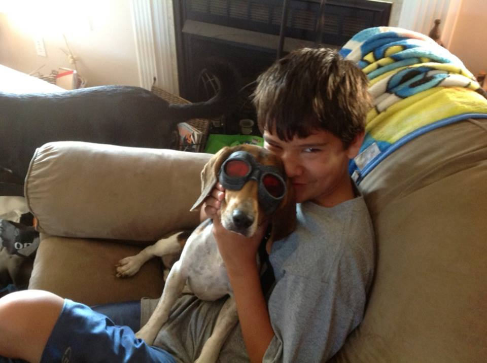

Partners for Pets
Partners For Pets is a licensed, 501(c)3, no-kill animal rescue located in Troy, IL
Several years ago I adopted a dog from Partners from Pets. He was
a 6 month old lab mix, and he was a stubborn,


We tried everything in the book to get him trained: took him to training classes, crate training, sprayed with vinegar water, electronic collars, electronic fence. Through it all, he stubbornly maintained that he was his own 'dog', and he frequently illustrated this through numerous chewed up shoes, torn off door frames, holes under the fence, and dragging me down the street. Despite all of the trials and tribulations, he was my dog and I loved him.
Over the years, I would stop by PetSmart to just 'look' at the dogs. I had three dogs already. In addition to TJ, I had Angel and Tasha, 12 year old border collie mixes. I couldn't possibly manage or afford another dog. TJ had already cost me a fortune. But they were so dang cute, and what was the harm in looking, right?
After coming regularly for several weeks, one of the volunteers from Partners for Pets started a conversation. That conversation started with, "no,no,no, I'm really not looking for a dog," and ended with me going home with a beagle named Howie.
So what happened there? Well, Partners for Pets needs fosters. The majority of dogs they rescue stay at the shelter, but bringing one home just gives it a much better shot at becoming adopted. The dog learns things in your home it just doesn't have the opportunity to at the shelter. They become socialized with other dogs, learn basic commands and learn how to live in a home. By bringing Howie home, I was saving his adopter from having to go through the same trials and tribulations I did when I adopted TJ. Or at least, hopefully, making it a little bit easier.
I've had three momma dogs with litters of puppies, two of which gave birth in my basement. I've had pit bulls, bull terriers, St. Bernard, collie, mastiff, rat terriers, jack russell terriers, lab mixes and a partridge in a pear tree. I've loved each and every one and pray I've been able to make their transition to their furr-ever homes so much easier. I could never have done any of it without the tremendous support and advice from the volunteers and staff at Partners for Pets.
Partners For Pets is a licensed, 501(c)3, no-kill animal rescue located in Troy, IL